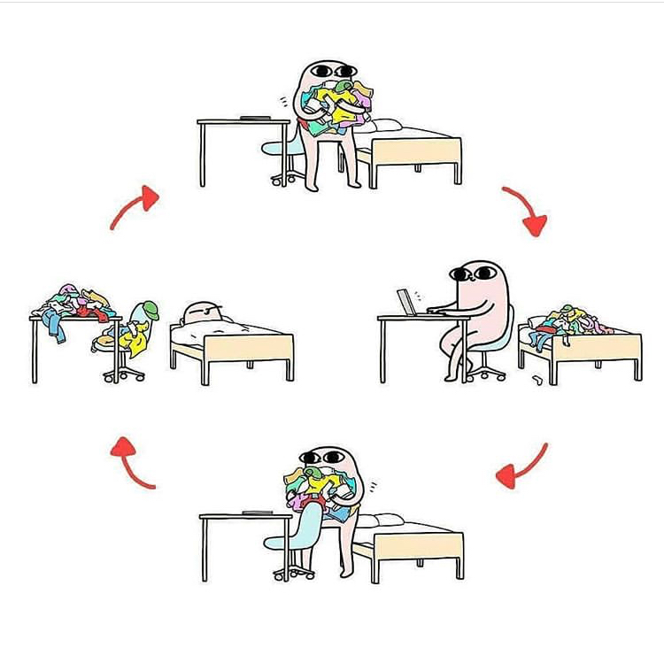
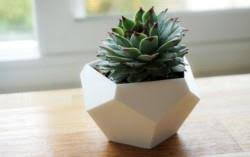

My interesting pictures
 Why I like these pictures:
Laundry (Left)
I really hate folding clothes when i finish doing laundry. I believe that the picture above is a great representation of what I go through.
Succulent (Right)
I believe that the right image connects with me on a minimalist sense. I like the complex yet clean shape of a dodecahedron. Plants are also cool!